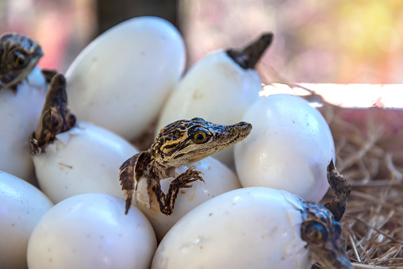

Firfisle

-
Firfisler er en stor familie med skjellkledde øgler med et konisk hode,
lang hale og fire velutviklede bein. Kroppslengde er som regel under 9 cm,
men perlefirfisle kan bli over 15 cm. De er dagaktive, og blir lett lagt merke til.
Føden består hovedsakelig av insekter. I Norge lever bare én art, på norsk bare kalt firfisle.
Den arten lever lengst nord av alle krypdyr, og finnes helt nord til Alta.
Firfislene er rikest utviklet i middelhavsområdet, der det ofte finnes seks til sju arter i det samme området.
Her har alle større øyer og halvøyer sine egne endemiske arter og underarter.
Andre reptiler:
